[To catch up, here are Days 1 and 2-A and 2-B and 3 and 4 and 5A and 5B]
Our diocesan group had sent a text to meet at the circle after the big gathering with Jesus, who had been displayed on high and given a proper tribute. It was beautiful to see all the people honoring our Lord in the light of day. And despite earlier predictions of rain that day, all that had changed by Saturday. Not a drop dripped on us. I can’t imagine they would have found a shelter large enough for us to commune in the beautiful outdoors. The music, the prayers, the unity: it is hard to describe just how amazing this procession with Jesus was, not to mention the whole week of events.
We were still on a high as we gathered with our bishop back on the circle.
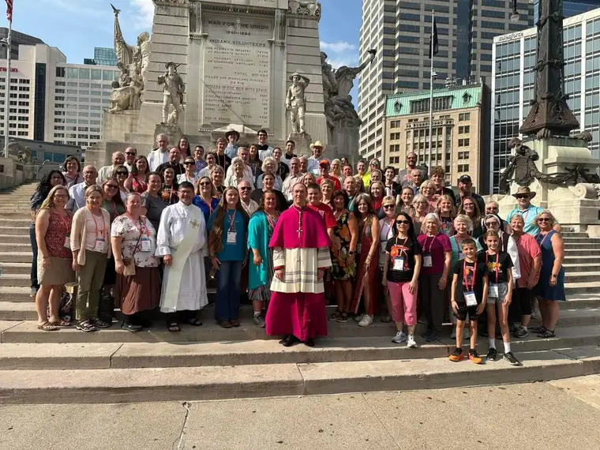
Our hearts were so full! But our bellies? Were empty. And I had hoped for one meal at a somewhat fancy restaurant while there. Despite our rushing here and there for days now, Joanne and I both sought a place to just…stop. And reflect. And give thanks. Jesus knew our human needs, too. That’s why he chose to offer himself in a meal, a banquet. He knew we would need to stop and eat for spiritual nourishment, and for actual nourishment, for our bodies to flourish.
So, after the group photo, down the road we went in search of a pleasant stopping point.
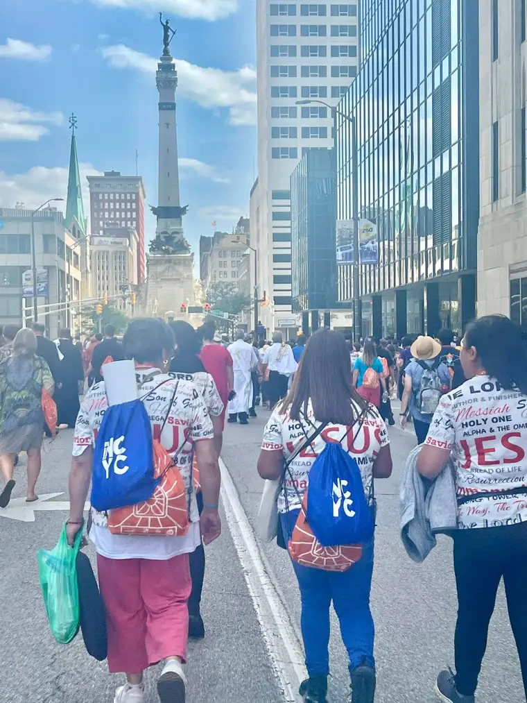
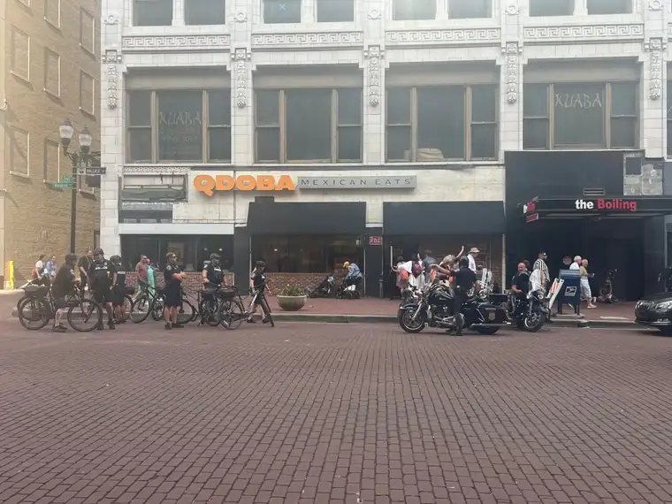
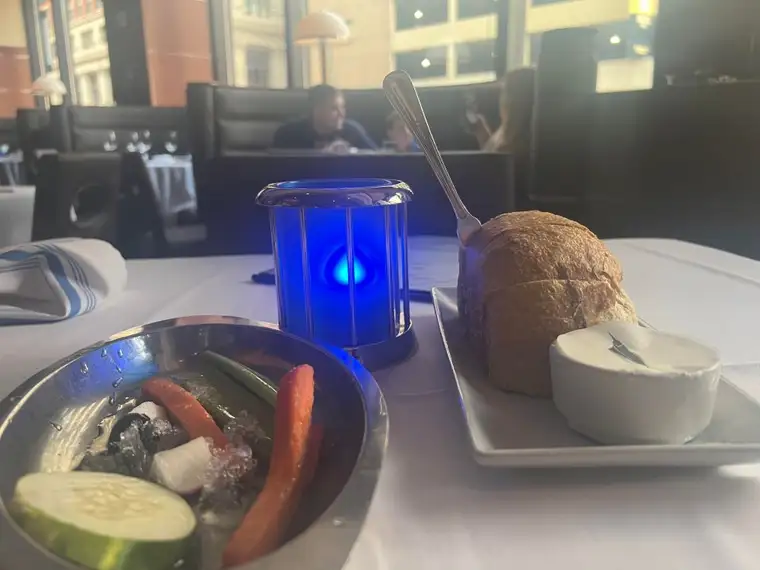
I had seafood on my mind, and though this wasn’t the seafood eatery I’d researched beforehand, the Oceanaire Seafood Room hooked us! As soon as we entered in our T-shirts, now dripping with sweat, however, I began second guessing our choice. It seemed a little too proper. “Do you have a reservation?” the host asked. Looking around, I sensed we were underdressed. Would we be turned away? I was about ready to concede when he had a cheerful hostess bring us to a lovely seat right in the middle of the restaurant.
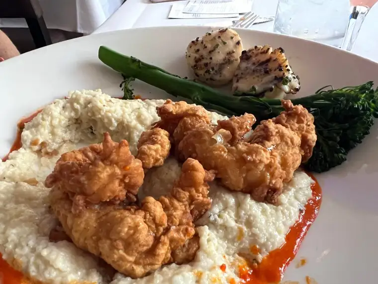
We enjoyed a most delicious meal, sharing crabcakes and chicken-fried lobster, along with warm bread and butter and a relish tray. Oh, and a really pretty, refreshing drink!
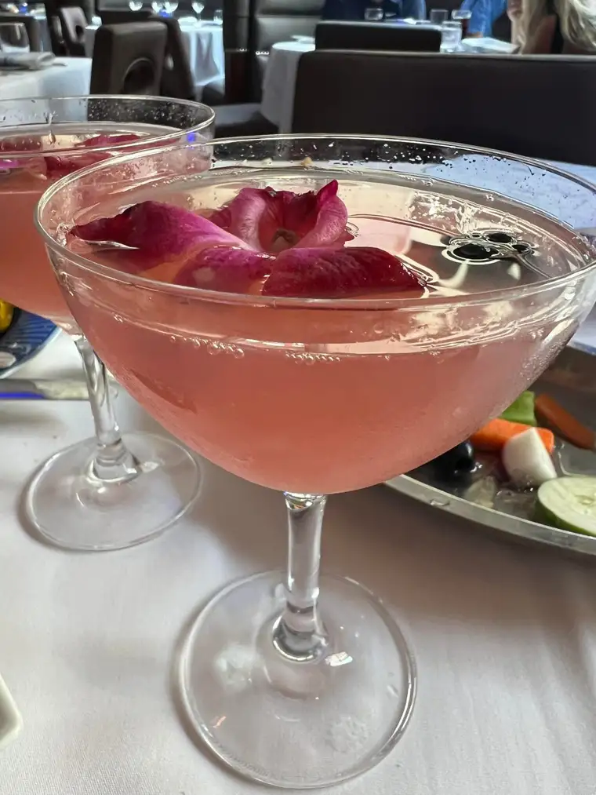
While still on the main entree, I looked at my phone and noticed a text from Patrick, the friend we’d met for lunch. “I’m here at the stadium close to the floor. Should I save you some seats?” “Oh, that would be great! We’re still eating dinner, but we’ll be there as soon as possible!” How kind of him!
We were promised an exciting evening: Matt Maher, and a few other special speaking guests, including Jonathan Roumie, who plays Jesus in “The Chosen” TV series, Bishop Robert Barron, and others. Though we couldn’t imagine anything topping what we’d just experienced, something beautiful was about to happen.
I just have to say that Jonathan’s T-shirt made me smile. Please don’t be scandalized! There’s so much truth right here.
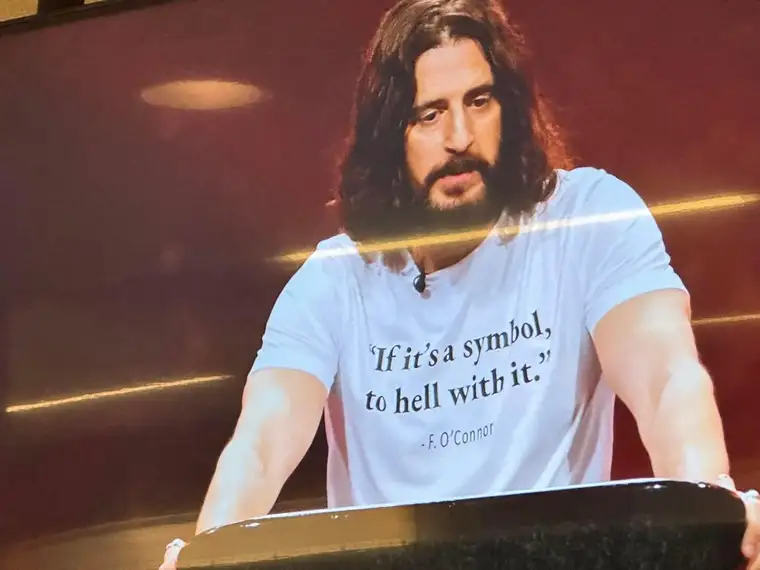
It’s one of my favorite quotes from Flannery O’Conner. “If it’s a symbol, to hell with it.” She was talking about the Eucharist. And I couldn’t think of a better phrase to lead us into the night. Was it just a symbol? Or was it really Jesus? We in the stadium knew the answer, and the answer meant everything.
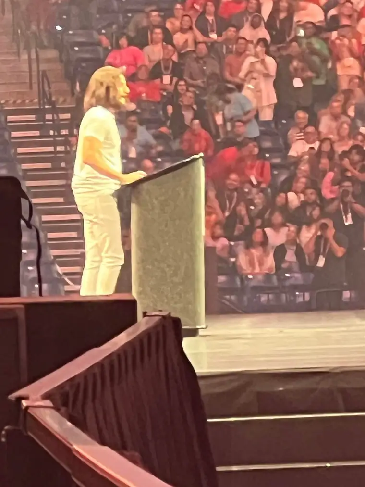
Jonathan had just come from filming a scene of the Last Supper (coincidence? I think not!), so he didn’t have a long, magnificent speech prepared. But what he did share was absolutely perfect. He read, in the voice he uses to depict Jesus’, the Bread of Life Discourse from John 6. That Scripture passage is the whole reason we were gathered! We needed that beautiful, powerful reminder, and it cut right to my soul in a good way!
Matt Maher was wonderful, as always. Listen here: https://www.youtube.com/watch?v=tkMRwkzjVtw&list=UULFaYoyTlqjtdvWg64jgX6zPQ&index=15
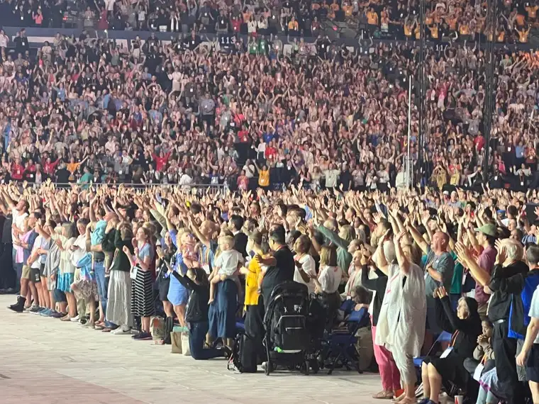
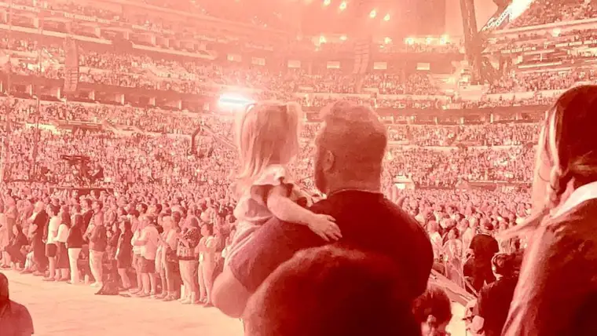
But one more gift was on its way. I don’t know why I didn’t expect Adoration this night. I think because we’d already had Adoration in the streets. But to our delight, Jesus entered the stadium once again.
I looked at Joanne, a sparkle in my eyes. “Joanne, this is the closest we’ve been to Him!” It was our chance to join the others on the floor rushing to the middle of the stadium to be near Jesus, and just rest at his feet. Glory!
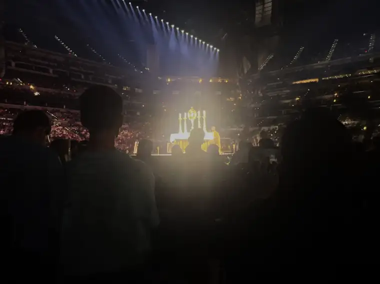
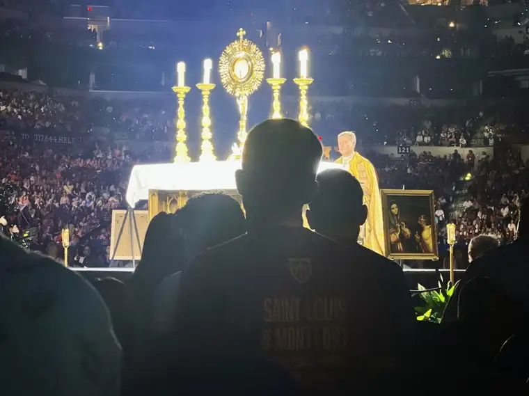
I truly felt refreshed by Jesus’ presence here as we sat on the floor before him, bowing at the reality before us. What a good, good Father we have. Here’s a little bit from that moment: https://www.youtube.com/shorts/Gg37zNCTisg
It was a day, and night, to remember, filled with the presence of God from top to bottom. We knew we’d been given something extraordinarily special, and it was hard to think of it ending. Thankfully, we had one more morning of the congress on the horizon.
But before we could put our tired heads on our pillows, Joanne and I had one more evening commitment. Despite our exhaustion–it was an exhilarating exhaustion–we found our way to a hotel, where a wine and apps gathering was taking place. We’d come a bit late, and the wine had run out, but not too late to meet Rich, a friend of Patrick and our initial connector, Sheryl, who was a delight. Everyone we met felt like family, because they WERE!
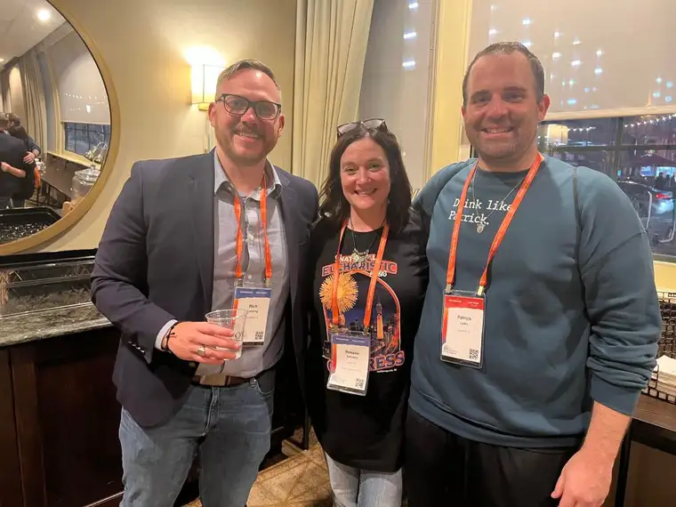
The biggest surprise, though, was meeting Fr. Lawrence, a priest from England with roots from Singapore. He grew up in an evangelical home, but became Catholic at age 14, all on his own. And wow, his faith is strong! He is a trained lawyer and we found him absolutely fascinating and so resolute in his faith that it gave us another surge of hope.
Here’s an article on him that recently ran in the National Catholic Register: https://www.ncregister.com/interview/meet-father-lawrence-lew-dominican-priest-love-for-mary
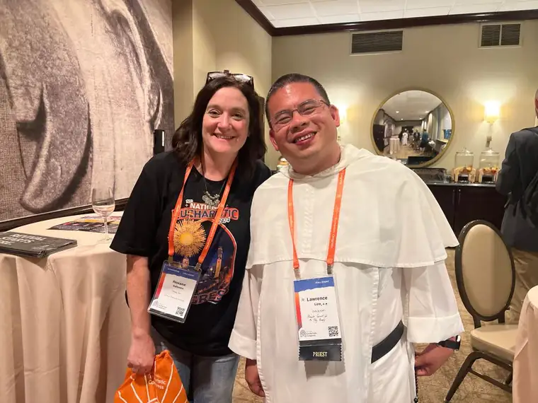
What a great way to end the day, our hearts and bellies and souls filled to the brim!